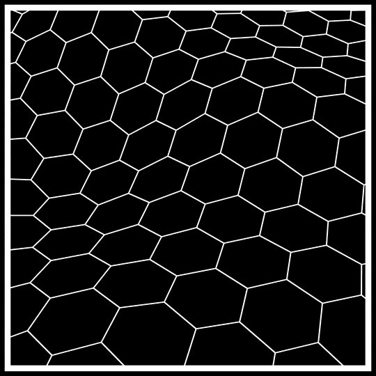

<!DOCTYPE html>
<html lang="en">
  <head>
    <meta charset="utf-8" />
    <meta name="viewport" content="width=device-width, initial-scale=1.0, maximum-scale=1.0, user-scalable=no" />

    <title></title>
    <link rel="stylesheet" href="dist/reveal.css" />
    <link rel="stylesheet" href="dist/theme/night.css" id="theme" />
    <link rel="stylesheet" href="plugin/highlight/zenburn.css" />
	<link rel="stylesheet" href="css/layout.css" />
	<link rel="stylesheet" href="plugin/customcontrols/style.css">
	<link rel="stylesheet" href="plugin/chalkboard/style.css">

	<link rel="stylesheet" href="plugin/reveal-pointer/pointer.css" />

    <link rel="stylesheet" href="css/videolayout.css" />

    <script defer src="dist/fontawesome/all.min.js"></script>

	<script type="text/javascript">
		var forgetPop = true;
		function onPopState(event) {
			if(forgetPop){
				forgetPop = false;
			} else {
				parent.postMessage(event.target.location.href, "app://obsidian.md");
			}
        }
		window.onpopstate = onPopState;
		window.onmessage = event => {
			if(event.data == "reload"){
				window.document.location.reload();
			}
			forgetPop = true;
		}

		function fitElements(){
			const itemsToFit = document.getElementsByClassName('fitText');
			for (const item in itemsToFit) {
				if (Object.hasOwnProperty.call(itemsToFit, item)) {
					var element = itemsToFit[item];
					fitElement(element,1, 1000);
					element.classList.remove('fitText');
				}
			}
		}

		function fitElement(element, start, end){

			let size = (end + start) / 2;
			element.style.fontSize = `${size}px`;

			if(Math.abs(start - end) < 1){
				while(element.scrollHeight > element.offsetHeight){
					size--;
					element.style.fontSize = `${size}px`;
				}
				return;
			}

			if(element.scrollHeight > element.offsetHeight){
				fitElement(element, start, size);
			} else {
				fitElement(element, size, end);
			}		
		}


		document.onreadystatechange = () => {
			fitElements();
			if (document.readyState === 'complete') {
				if (window.location.href.indexOf("?export") != -1){
					parent.postMessage(event.target.location.href, "app://obsidian.md");
				}
				if (window.location.href.indexOf("print-pdf") != -1){
					let stateCheck = setInterval(() => {
						clearInterval(stateCheck);
						window.print();
					}, 250);
				}
			}
	};


        </script>
  </head>
  <body>
    <div class="reveal">
      <div class="slides"><section  data-markdown><script type="text/template"><!-- .slide: class="drop" -->
<div class="" style="position: absolute; left: 0px; top: 0px; height: 540px; width: 960px; min-height: 540px; display: flex; flex-direction: column; align-items: center; justify-content: center" absolute="true">

## Proof of humanity PoH

  A new approach in a world dominated by Tech/AI

```bash
									 by Asahi Cantu
```
</div></script></section><section  data-markdown><script type="text/template"><!-- .slide: class="drop" -->
<div class="" style="position: absolute; left: 0px; top: 0px; height: 540px; width: 960px; min-height: 540px; display: flex; flex-direction: column; align-items: center; justify-content: center" absolute="true">

<div class="callout callout-color2">
<div class="callout-title">
<div class="callout-icon">

<i class="fas fa-fire-alt" ></i>


</div>
<div class="callout-title-inner">

Vladimir Ilyich 

</div>
</div>
<div class="callout-content">

"There are DECADES where nothing happens;

and there are weeks where DECADES happen"

</div>
</div>
<!-- .element: style="font-size: 30px; transform: rotate(0deg)" -->
</div></script></section><section  data-markdown><script type="text/template"><!-- .slide: class="drop" -->
<div class="" style="position: absolute; left: 0px; top: 0px; height: 540px; width: 960px; min-height: 540px; display: flex; flex-direction: column; align-items: center; justify-content: center" absolute="true">

## Disclaimer I
... Collective and Self reflections ...
</div></script></section><section  data-markdown><script type="text/template"><!-- .slide: class="drop" -->
<div class="" style="position: absolute; left: 0px; top: 0px; height: 540px; width: 960px; min-height: 540px; display: flex; flex-direction: column; align-items: center; justify-content: center" absolute="true">

## Disclaimer II

Difficult topics
</div></script></section><section  data-markdown><script type="text/template"><!-- .slide: class="drop" -->
<div class="" style="position: absolute; left: 0px; top: 0px; height: 540px; width: 960px; min-height: 540px; display: flex; flex-direction: column; align-items: center; justify-content: center" absolute="true">

## Disclaimer III
Sorry
</div>

<aside class="notes"><p>I apologize in advance if i stutter or fail to elaborate my thoughts..</p>
</aside></script></section><section  data-markdown><script type="text/template"><!-- .slide: class="drop" -->
<div class="" style="position: absolute; left: 0px; top: 0px; height: 540px; width: 960px; min-height: 540px; display: flex; flex-direction: column; align-items: center; justify-content: center" absolute="true">

# STAGE I 

Losing control...
</div></script></section><section  data-markdown><script type="text/template"><!-- .slide: class="drop" -->
<div class="" style="position: absolute; left: 0px; top: 0px; height: 540px; width: 960px; min-height: 540px; display: flex; flex-direction: column; align-items: center; justify-content: center" absolute="true">

## Technology
Behavioral change


</div></script></section><section  data-markdown><script type="text/template"><!-- .slide: class="drop" -->
<div class="" style="position: absolute; left: 0px; top: 0px; height: 540px; width: 960px; min-height: 540px; display: flex; flex-direction: column; align-items: center; justify-content: center" absolute="true">

##  The reverse Turing test

Machines using tools to confirm 'internet entities' are not human
</div></script></section><section  data-markdown><script type="text/template"><!-- .slide: class="drop" -->
<div class="" style="position: absolute; left: 0px; top: 0px; height: 540px; width: 960px; min-height: 540px; display: flex; flex-direction: column; align-items: center; justify-content: center" absolute="true">

## Technofeudalism

Not your content, not your data
</div></script></section><section  data-markdown><script type="text/template"><!-- .slide: class="drop" -->
<div class="" style="position: absolute; left: 0px; top: 0px; height: 540px; width: 960px; min-height: 540px; display: flex; flex-direction: column; align-items: center; justify-content: center" absolute="true">

## Dead internet
</div></script></section><section  data-markdown><script type="text/template"><!-- .slide: class="drop" -->
<div class="" style="position: absolute; left: 0px; top: 0px; height: 540px; width: 960px; min-height: 540px; display: flex; flex-direction: column; align-items: center; justify-content: center" absolute="true">

## Copilots, agents and digital twins
To be given before I  know what I want

🧠
</div></script></section><section  data-markdown><script type="text/template"><!-- .slide: class="drop" -->
<div class="" style="position: absolute; left: 0px; top: 0px; height: 540px; width: 960px; min-height: 540px; display: flex; flex-direction: column; align-items: center; justify-content: center" absolute="true">

### AI

* ~Artificial~ Alien Intelligence

* Synthetic data
</div>

<aside class="notes"><p>Exceeds infornation generated by human kind in all its history</p>
</aside></script></section><section  data-markdown><script type="text/template"><!-- .slide: class="drop" -->
<div class="" style="position: absolute; left: 0px; top: 0px; height: 540px; width: 960px; min-height: 540px; display: flex; flex-direction: column; align-items: center; justify-content: center" absolute="true">

## What is real?

📱🖼️📷
</div></script></section><section  data-markdown><script type="text/template"><!-- .slide: class="drop" -->
<div class="" style="position: absolute; left: 0px; top: 0px; height: 540px; width: 960px; min-height: 540px; display: flex; flex-direction: column; align-items: center; justify-content: center" absolute="true">

### The end of non-repudiation

🚫  🎥 📷  🤳🏽 ➿ 🖼


</div>

<aside class="notes"><p>trust is beginning to banish in the digital world</p>
</aside></script></section><section  data-markdown><script type="text/template"><!-- .slide: class="drop" -->
<div class="" style="position: absolute; left: 0px; top: 0px; height: 540px; width: 960px; min-height: 540px; display: flex; flex-direction: column; align-items: center; justify-content: center" absolute="true">

## To ban 🚫 

* ShadowBanning
* Heavenbanning

👤💬
  ⛔ 

💻🤖🤖🤖🤖🤖🤖
</div></script></section><section  data-markdown><script type="text/template"><!-- .slide: class="drop" -->
<div class="" style="position: absolute; left: 0px; top: 0px; height: 540px; width: 960px; min-height: 540px; display: flex; flex-direction: column; align-items: center; justify-content: center" absolute="true">

## Programmed obsolescence

### 🙈 < 🤦🏽‍♂️ < 🤖    < 💻
</div></script></section><section  data-markdown><script type="text/template"><!-- .slide: class="drop" -->
<div class="" style="position: absolute; left: 0px; top: 0px; height: 540px; width: 960px; min-height: 540px; display: flex; flex-direction: column; align-items: center; justify-content: center" absolute="true">

## On political systems

... Simple solutions to complex problems
</div></script></section><section  data-markdown><script type="text/template"><!-- .slide: class="drop" -->
<div class="" style="position: absolute; left: 0px; top: 0px; height: 540px; width: 960px; min-height: 540px; display: flex; flex-direction: column; align-items: center; justify-content: center" absolute="true">

## Lost Connections


</div></script></section><section  data-markdown><script type="text/template"><!-- .slide: class="drop" -->
<div class="" style="position: absolute; left: 0px; top: 0px; height: 540px; width: 960px; min-height: 540px; display: flex; flex-direction: column; align-items: center; justify-content: center" absolute="true">

# STAGE II

Possibility
</div></script></section><section  data-markdown><script type="text/template"><!-- .slide: class="drop" -->
<div class="" style="position: absolute; left: 0px; top: 0px; height: 540px; width: 960px; min-height: 540px; display: flex; flex-direction: column; align-items: center; justify-content: center" absolute="true">

## The lattice


</div></script></section><section  data-markdown><script type="text/template"><!-- .slide: class="drop" -->
<div class="" style="position: absolute; left: 0px; top: 0px; height: 540px; width: 960px; min-height: 540px; display: flex; flex-direction: column; align-items: center; justify-content: center" absolute="true">

## The Meaning and the Significant

#  ❤ 🔥
</div></script></section><section  data-markdown><script type="text/template"><!-- .slide: class="drop" -->
<div class="" style="position: absolute; left: 0px; top: 0px; height: 540px; width: 960px; min-height: 540px; display: flex; flex-direction: column; align-items: center; justify-content: center" absolute="true">

## On dealing with indifference
</div></script></section><section  data-markdown><script type="text/template"><!-- .slide: class="drop" -->
<div class="" style="position: absolute; left: 0px; top: 0px; height: 540px; width: 960px; min-height: 540px; display: flex; flex-direction: column; align-items: center; justify-content: center" absolute="true">

## On awareness

* Emergent phenomena
* Multiplier effect
* 2nd  and 3rd  degree consequences
</div></script></section><section  data-markdown><script type="text/template"><!-- .slide: class="drop" -->
<div class="" style="position: absolute; left: 0px; top: 0px; height: 540px; width: 960px; min-height: 540px; display: flex; flex-direction: column; align-items: center; justify-content: center" absolute="true">

# Stage III

###  From PoW to PoH
</div></script></section><section  data-markdown><script type="text/template"><!-- .slide: class="drop" -->
<div class="" style="position: absolute; left: 0px; top: 0px; height: 540px; width: 960px; min-height: 540px; display: flex; flex-direction: column; align-items: center; justify-content: center" absolute="true">

## On being alive...

$
1 : 10^{2685000} \approx 0
$

#### 👩🏽👨🏽🧑🏽👱🏽‍♀️👱🏽‍♂️👵🏽👲🏽🧔🏽🎅🏽🤶🏽👳🏽‍♀️👳🏽‍♂️👨🏽‍🦰👩🏽‍🦰👴🏽🧓🏽

</div></script></section><section  data-markdown><script type="text/template"><!-- .slide: class="drop" -->
<div class="" style="position: absolute; left: 0px; top: 0px; height: 540px; width: 960px; min-height: 540px; display: flex; flex-direction: column; align-items: center; justify-content: center" absolute="true">

## ... For a shameless future
# 🕊
</div></script></section><section  data-markdown><script type="text/template"><!-- .slide: class="drop" -->
<div class="" style="position: absolute; left: 0px; top: 0px; height: 540px; width: 960px; min-height: 540px; display: flex; flex-direction: column; align-items: center; justify-content: center" absolute="true">

## On Singularity

</div>

<aside class="notes"><p>“I am 25. These next five years might be the last few years that I work. I am not ill, nor am I becoming a stay-at-home mom, nor have I been so financially fortunate to be on the brink of voluntary retirement. I stand at the edge of a technological development that seems likely, should it arrive, to end employment as I know it.  - Avital Balwit (Chief of staff at Anthropic) 17.05.2024</p>
</aside></script></section><section  data-markdown><script type="text/template"><!-- .slide: class="drop" -->
<div class="" style="position: absolute; left: 0px; top: 0px; height: 540px; width: 960px; min-height: 540px; display: flex; flex-direction: column; align-items: center; justify-content: center" absolute="true">

##  Grateful for

</div>

<aside class="notes"><p>Living in Norway
in a place that allows me to think and perform the things I want to do</p>
</aside></script></section><section  data-markdown><script type="text/template"><!-- .slide: class="drop" -->
<div class="" style="position: absolute; left: 0px; top: 0px; height: 540px; width: 960px; min-height: 540px; display: flex; flex-direction: column; align-items: center; justify-content: center" absolute="true">

# THE END
### What is your PoH?
</div></script></section></div>
    </div>

    <script src="dist/reveal.js"></script>

    <script src="plugin/markdown/markdown.js"></script>
    <script src="plugin/highlight/highlight.js"></script>
    <script src="plugin/zoom/zoom.js"></script>
    <script src="plugin/notes/notes.js"></script>
    <script src="plugin/math/math.js"></script>
	<script src="plugin/mermaid/mermaid.js"></script>
	<script src="plugin/chart/chart.min.js"></script>
	<script src="plugin/chart/plugin.js"></script>
	<script src="plugin/menu/menu.js"></script>
	<script src="plugin/customcontrols/plugin.js"></script>
	<script src="plugin/chalkboard/plugin.js"></script>
	<script src="plugin/reveal-pointer/pointer.js"></script>
	<script src="plugin/elapsed-time-bar/elapsed-time-bar.js"></script>

    <script>
      function extend() {
        var target = {};
        for (var i = 0; i < arguments.length; i++) {
          var source = arguments[i];
          for (var key in source) {
            if (source.hasOwnProperty(key)) {
              target[key] = source[key];
            }
          }
        }
        return target;
      }

	  function isLight(color) {
		let hex = color.replace('#', '');

		// convert #fff => #ffffff
		if(hex.length == 3){
			hex = `${hex[0]}${hex[0]}${hex[1]}${hex[1]}${hex[2]}${hex[2]}`;
		}

		const c_r = parseInt(hex.substr(0, 2), 16);
		const c_g = parseInt(hex.substr(2, 2), 16);
		const c_b = parseInt(hex.substr(4, 2), 16);
		const brightness = ((c_r * 299) + (c_g * 587) + (c_b * 114)) / 1000;
		return brightness > 155;
	}

	var bgColor = getComputedStyle(document.documentElement).getPropertyValue('--r-background-color').trim();
	var isLight = isLight(bgColor);

	if(isLight){
		document.body.classList.add('has-light-background');
	} else {
		document.body.classList.add('has-dark-background');
	}

      // default options to init reveal.js
      var defaultOptions = {
        controls: true,
        progress: true,
        history: true,
        center: true,
        transition: 'default', // none/fade/slide/convex/concave/zoom
        plugins: [
          RevealMarkdown,
          RevealHighlight,
          RevealZoom,
          RevealNotes,
          RevealMath.MathJax3,
		  RevealMermaid,
		  RevealChart,
		  RevealCustomControls,
		  RevealMenu,
	      RevealPointer,
		  RevealChalkboard, 
		  ElapsedTimeBar
        ],


    	allottedTime: 1800 * 1000,

		mathjax3: {
			mathjax: 'plugin/math/mathjax/tex-mml-chtml.js',
		},
		markdown: {
		  gfm: true,
		  mangle: true,
		  pedantic: false,
		  smartLists: false,
		  smartypants: false,
		},

		mermaid: {
			theme: isLight ? 'default' : 'dark',
		},

		customcontrols: {
			controls: [
				{id: 'toggle-overview',
				title: 'Toggle overview (O)',
				icon: '<i class="fa fa-th"></i>',
				action: 'Reveal.toggleOverview();'
				},
				{ icon: '<i class="fa fa-pen-square"></i>',
				title: 'Toggle chalkboard (B)',
				action: 'RevealChalkboard.toggleChalkboard();'
				},
				{ icon: '<i class="fa fa-pen"></i>',
				title: 'Toggle notes canvas (C)',
				action: 'RevealChalkboard.toggleNotesCanvas();'
				},
			]
		},
		menu: {
			loadIcons: false
		}
      };

      // options from URL query string
      var queryOptions = Reveal().getQueryHash() || {};

      var options = extend(defaultOptions, {"width":960,"height":540,"margin":0,"maxScale":4,"controls":true,"progress":true,"slideNumber":"true","transition":"fade","transitionSpeed":"default"}, queryOptions);
    </script>

    <script>
      Reveal.initialize(options);
    </script>
  </body>

  <!-- created with Advanced Slides -->
</html>
